Što ćeš na kraju imati
Jedan DWG s tri lista i tri PDF-a: list 1 – tablica vrsta crta prema ISO 128 (skupina crta 0,5); list 2 – nosač vretena PS1-01-003 u mjerilu 2:1 s kotama i oznakama navoja; list 3 – graničnik klizača u nacrtu, tlocrtu i bokocrtu (europska metoda). Polaziš od svog crteža iz V1. Ovako izgledaju PDF-ovi:
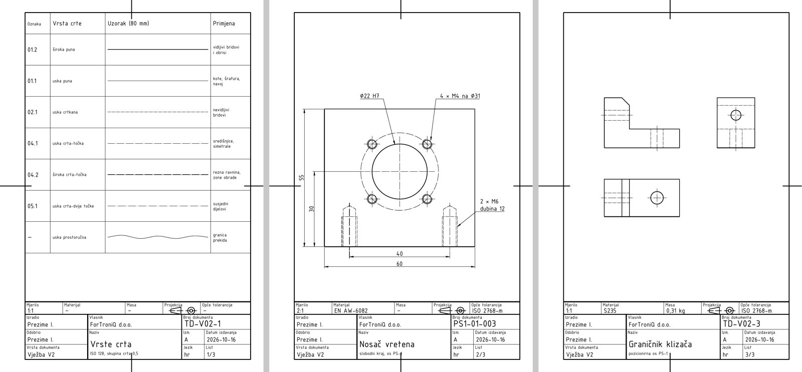
Prije početka pročitaj ovo (2 minute)
- „Klikni“ = jedan klik lijevom tipkom miša. „Upiši“ = tipkaj na tipkovnici.
- Nakon svakog upisa pritisni Enter. U okvirima Upiši uz svaki unos piše Enter – svaki put ga stvarno pritisni.
- Koordinate se pišu X,Y – zarez odvaja X i Y, npr.
210,297. Decimalni broj piše se s točkom, npr.148.5. - Točka
0,0je donji lijevi kut lista. X raste udesno, Y raste prema gore. Sve mjere su u milimetrima. - Pogriješio(la) si? Pritisni Esc (prekida naredbu), a Ctrl+Z poništava zadnju radnju.
- Za ovu vježbu treba ti gotova V1 (list s okvirom, zaglavljem, slojevima i stilom TD_ISO). Ako je nemaš, najprije napravi V1.
- Uz svaki korak je kvačica gotovo – označi je kad završiš korak, pa ćeš znati gdje si stao(la).
Ako nešto ne ide
- Piše „Unknown command“ – naredba nije bila pokrenuta. Pritisni Esc, pa ponovno klikni alat (ili upiši naredbu) i tek onda brojeve.
- Ne vidiš što si nacrtao(la) – upiši
ZOOMEnterEEnter. - Crte su na krivom mjestu – provjeri dio B (DYNMODE i OSMODE moraju biti 0) i jesi li pisao(la) točku, a ne zarez, u decimalnom broju.
- Ne znaš gdje si stao(la) – sve koordinate u tablicama su točne; nacrtano usporedi sa slikom koraka. Pogrešnu crtu klikni i pritisni Delete.
- Tekst se ne da kliknuti (TEXTEDIT) – približi ga (ZOOM W) i klikni točno na crtu slova.
- Crta je krive boje ili debljine – bila je odabran krivi sloj. Klikni crtu, pa u popisu slojeva na traci odaberi pravi sloj i pritisni Esc.
Sadržaj
- A. Otvori svoj crtež iz V1 i spremi ga kao V2
- B. Tri postavke na početku
- C. Obriši probu pisma iz V1
- D. Zaglavlje – dva podatka koja vrijede za sva tri lista
- E. Tri lista: kopiraj okvir i zaglavlje
- F. List 1 – mreža tablice vrsta crta
- G. List 1 – uzorci crta (svaki 80 mm)
- H. List 1 – tekstovi u tablici
- I. List 1 – zaglavlje
- J. List 2 – osi nosača (mjerilo 2:1)
- K. List 2 – obris, provrt Ø22 i rupe M4
- L. List 2 – navoj M4 (tri četvrtine kružnice)
- M. List 2 – rupe M6 odozdo (nevidljivi bridovi)
- N. List 2 – kote
- O. List 2 – oznake provrta i navoja
- P. List 2 – zaglavlje
- R. List 3 – graničnik: nacrt i tlocrt
- S. List 3 – pomoćne crte pod 45° i bokocrt
- T. List 3 – nevidljivi bridovi i osi
- U. List 3 – zaglavlje
- V. Ispis tri PDF-a
- Z. Spremi, vrati postavke i predaj
AOtvori svoj crtež iz V1 i spremi ga kao V2
TD_2026-2027_Prezime_Ime_V01).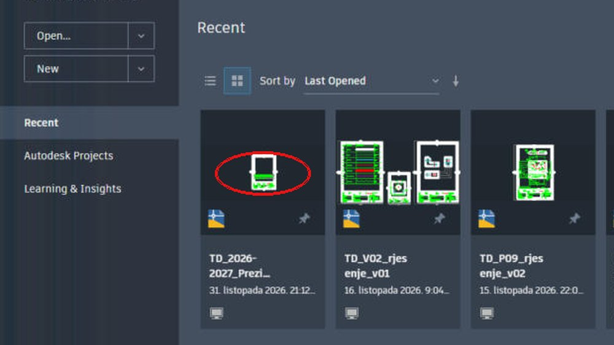
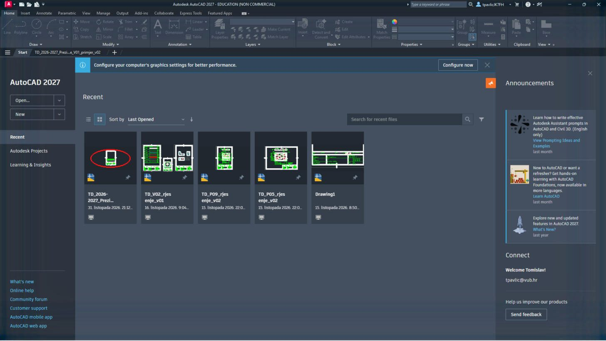
SAVEAS i pritisni Enter. Otvori se prozor Save Drawing As.SAVEAS EnterTD_2026-2027_Prezime_Ime_V02 (svoje prezime i ime). Mapa (gore, Save in) neka ostane ista kao za V1. Klikni Save.

BTri postavke na početku
| Upiši naredbu | Pa vrijednost | Što to znači |
|---|---|---|
DYNMODE | 0 | nema oblačića uz kursor – broj koji upišeš znači točno mjesto na listu |
OSMODE | 0 | kursor ne „skače“ na obližnje točke |
GRIDMODE | 0 | nema mreže kvadratića |


CObriši probu pisma iz V1
ERASE Enter, pa W Enter (W = Window, odabir prozorom), pa dva kuta prozora: 22,60 Enter i 198,285 Enter.ERASE Enter W Enter 22,60 Enter 198,285 Enter
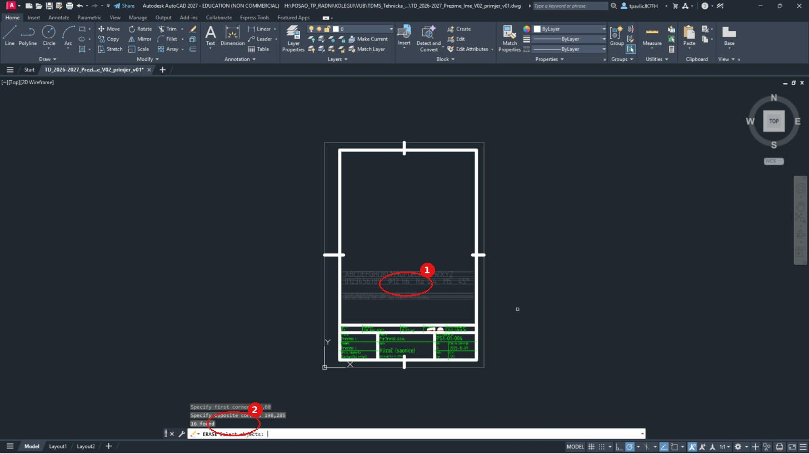
DZaglavlje – dva podatka koja vrijede za sva tri lista
ZOOM Enter, W Enter, 15,5 Enter, 205,60 Enter.ZOOM Enter W Enter 15,5 Enter 205,60 Enter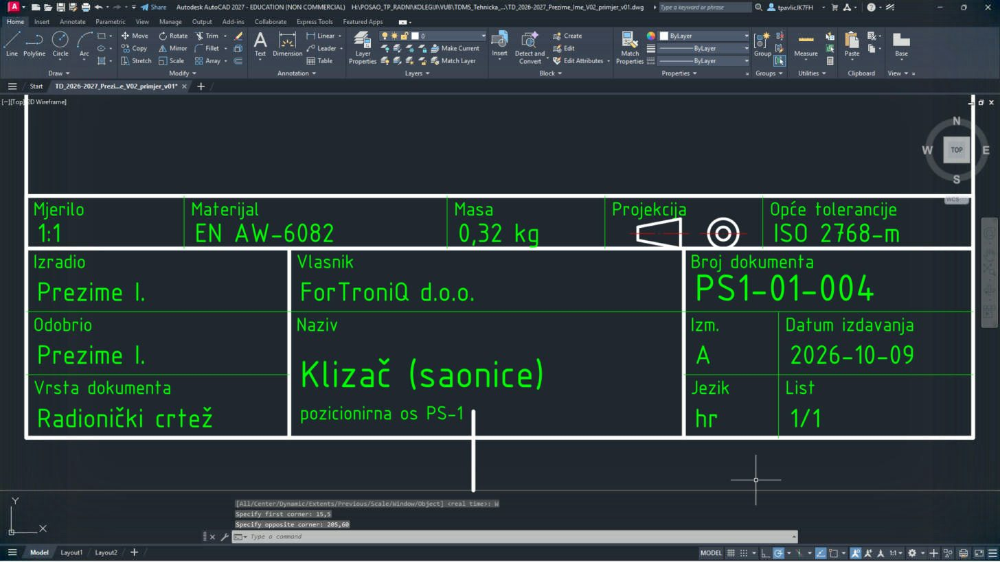
TEXTEDIT. Upiši TEXTEDIT Enter. AutoCAD pita Select an annotation object. Klikni tekst Radionički crtež (polje Vrsta dokumenta).TEXTEDIT Enter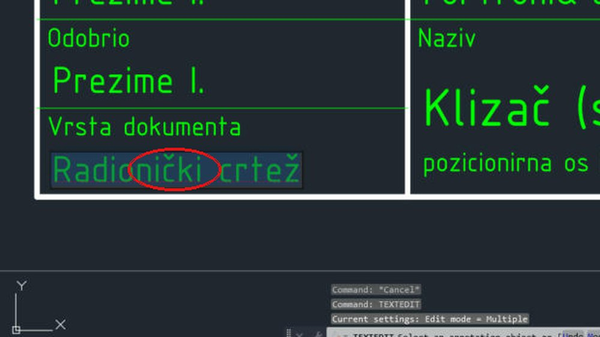
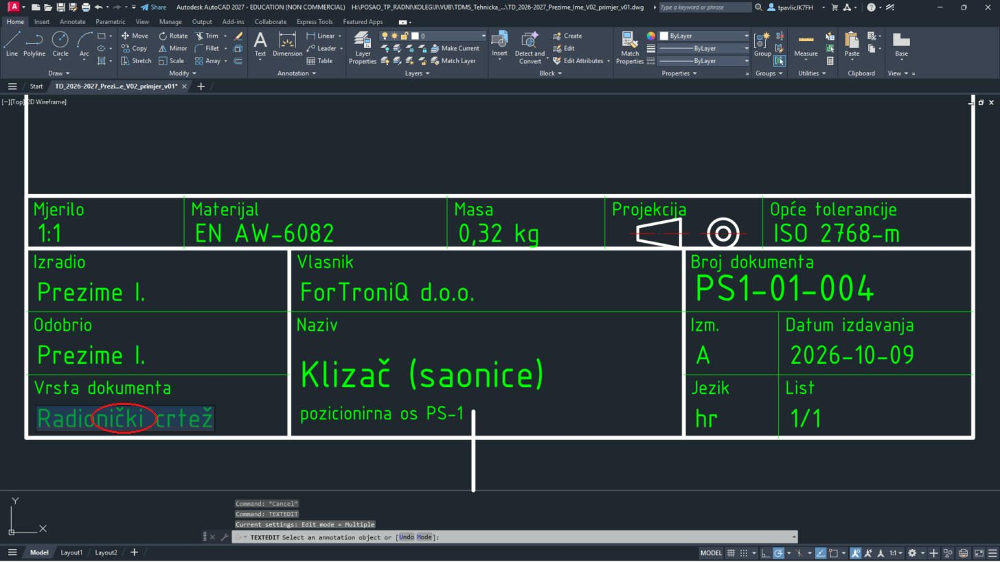
Vježba V2 – stari tekst nestaje sam. Pritisni Enter.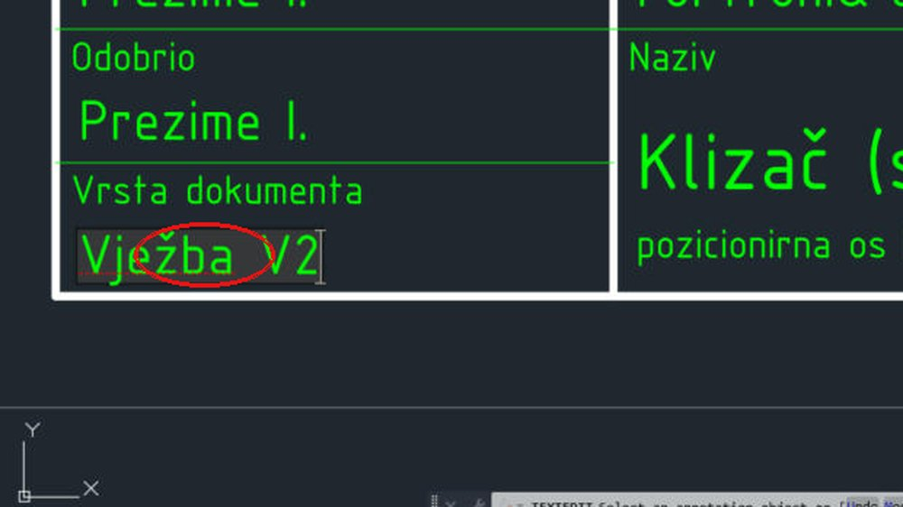
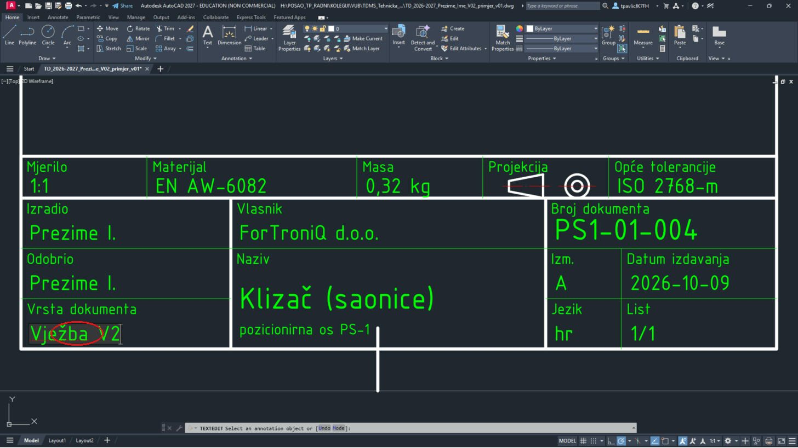
2026-10-16 i pritisni Enter. Zatim pritisni Esc da završiš TEXTEDIT.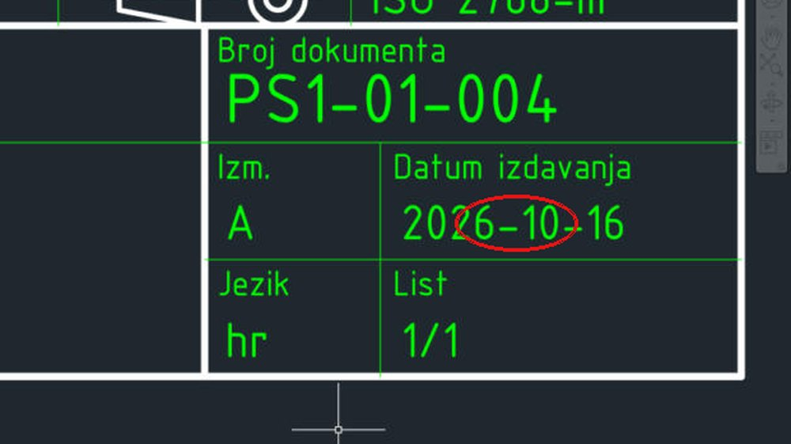
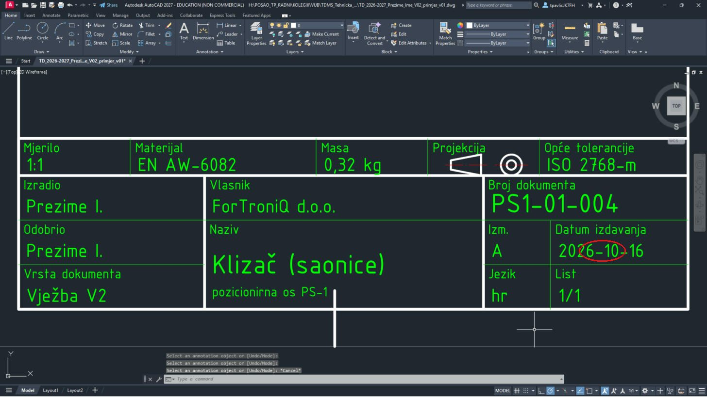
ETri lista: kopiraj okvir i zaglavlje
ZOOM Enter, W Enter, -10,-10 Enter, 460,310 Enter.ZOOM Enter W Enter -10,-10 Enter 460,310 EnterCOPY Enter, W Enter, -1,-1 Enter, 211,298 Enter.COPY Enter W Enter -1,-1 Enter 211,298 Enter

0,0 Enter. Zatim drugu točku: 230,0 Enter. Na kraju još jednom Enter (završava COPY).0,0 Enter 230,0 Enter (Enter)SCALE Enter, W Enter, 229,-1 Enter, 441,298 Enter.SCALE Enter W Enter 229,-1 Enter 441,298 Enter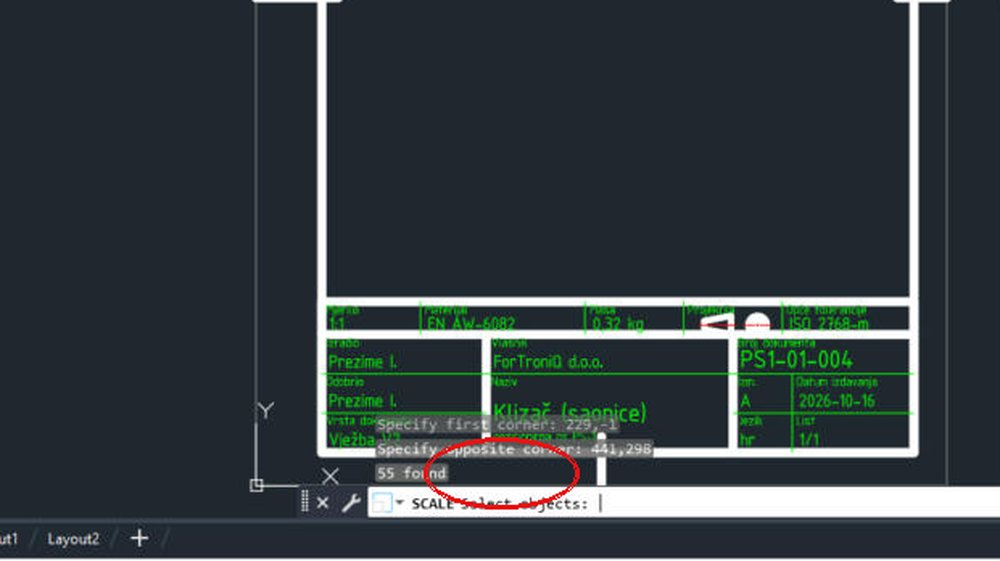
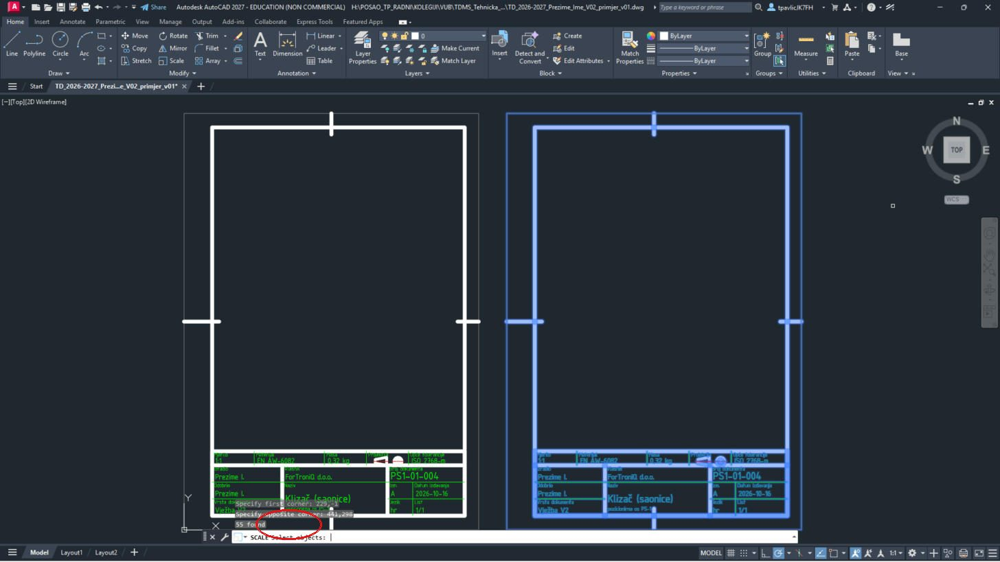
230,0 Enter i faktor 0.5 Enter.230,0 Enter 0.5 Enter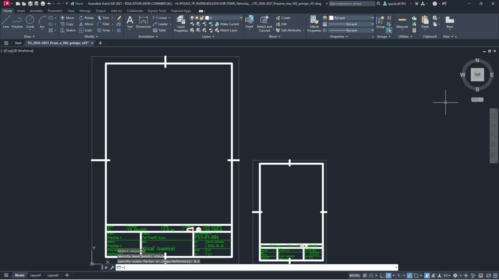
0.5. S bazom 230,0 donji lijevi kut lista ostaje na mjestu.COPY Enter, W Enter, -1,-1 Enter, 211,298 Enter, Enter, 0,0 Enter, 355,0 Enter, Enter. Zatim ZOOM Enter E Enter.COPY Enter W Enter -1,-1 Enter 211,298 Enter (Enter) 0,0 Enter 355,0 Enter (Enter) ZOOM Enter E Enter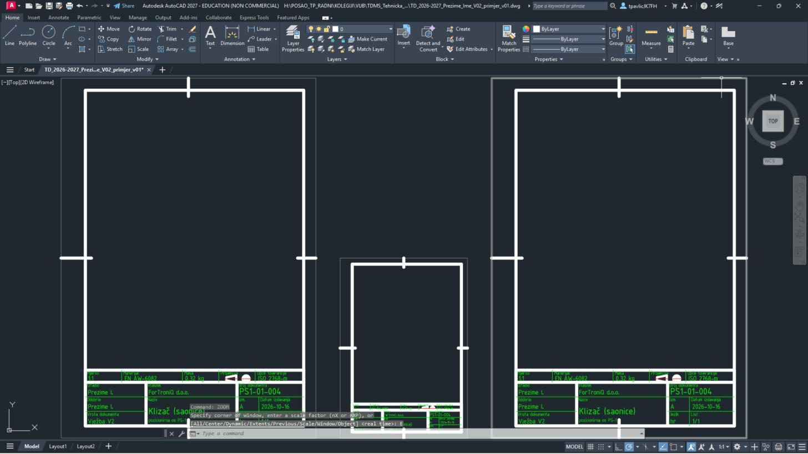
FList 1 – mreža tablice vrsta crta
ZOOM Enter, W Enter, -5,-5 Enter, 215,300 Enter. Odaberi sloj 04_KOTE: gore na traci klikni strelicu ⌄ uz popis slojeva i klikni ime sloja (kao u V1). Može i ovako: upiši CLAYER Enter, ime sloja, Enter.ZOOM Enter W Enter -5,-5 Enter 215,300 EnterLINE Enter → prva točka Enter → druga točka Enter → još jednom Enter (završava crtu).| # | Prva točka | Druga točka |
|---|---|---|
| 1 | 20,270 | 200,270 |
| 2 | 20,245 | 200,245 |
| 3 | 20,220 | 200,220 |
| 4 | 20,195 | 200,195 |
| 5 | 20,170 | 200,170 |
| 6 | 20,145 | 200,145 |
| 7 | 20,120 | 200,120 |
| 8 | 20,95 | 200,95 |
| 9 | 40,95 | 40,287 |
| 10 | 84,95 | 84,287 |
| 11 | 168,95 | 168,287 |
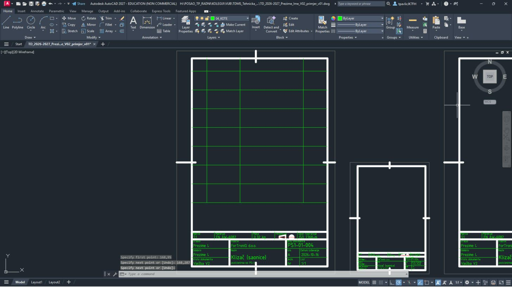
GList 1 – uzorci crta (svaki 80 mm)
LINE Enter → prva točka Enter → druga točka Enter → još jednom Enter (završava crtu).| Sloj | Prva točka | Druga točka | Što trebaš vidjeti |
|---|---|---|---|
01_VIDLJIVO | 86,257.5 | 166,257.5 | široka puna – bijela, debela |
04_KOTE | 86,232.5 | 166,232.5 | uska puna – zelena, tanka |
02_NEVIDLJIVO | 86,207.5 | 166,207.5 | uska crtkana – svijetloplava |
03_OSI | 86,182.5 | 166,182.5 | uska crta-točka – crvena |
07_REZNA | 86,157.5 | 166,157.5 | široka crta-točka – crvena, debela |
08_SUSJEDNI | 86,132.5 | 166,132.5 | uska crta-dvije točke – ljubičasta |
SPLINE Enter i redom sedam točaka (nakon svake Enter), a na kraju još jednom Enter.SPLINE Enter 86,107.5 Enter 99,109 Enter 112,106.5 Enter 126,108.5 Enter 140,106.5 Enter 153,108.5 Enter 166,107.5 Enter (Enter)ZOOM Enter, W Enter, 15,90 Enter, 205,290 Enter.ZOOM Enter W Enter 15,90 Enter 205,290 Enter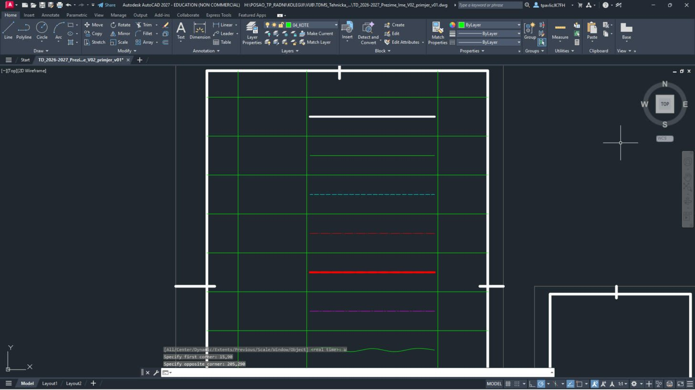
HList 1 – tekstovi u tablici
TEXT Enter → točka Enter → visina Enter → kut 0 Enter → tekst → Enter → Enter. Upiši ova 32 teksta (prvi redak su naslovi stupaca):| # | Točka | Visina | Tekst (prepiši točno) |
|---|---|---|---|
| 1 | 22,276.75 | 2.5 | Oznaka |
| 2 | 42,276.75 | 3.5 | Vrsta crte |
| 3 | 86,276.75 | 3.5 | Uzorak (80 mm) |
| 4 | 170,276.75 | 3.5 | Primjena |
| 5 | 22,255.75 | 3.5 | 01.2 |
| 6 | 42,256.25 | 2.5 | široka puna |
| 7 | 170,258.1 | 2.5 | vidljivi bridovi |
| 8 | 170,253.9 | 2.5 | i obrisi |
| 9 | 22,230.75 | 3.5 | 01.1 |
| 10 | 42,231.25 | 2.5 | uska puna |
| 11 | 170,233.1 | 2.5 | kote, šrafura, |
| 12 | 170,228.9 | 2.5 | navoj |
| 13 | 22,205.75 | 3.5 | 02.1 |
| 14 | 42,206.25 | 2.5 | uska crtkana |
| 15 | 170,208.1 | 2.5 | nevidljivi |
| 16 | 170,203.9 | 2.5 | bridovi |
| 17 | 22,180.75 | 3.5 | 04.1 |
| 18 | 42,181.25 | 2.5 | uska crta-točka |
| 19 | 170,183.1 | 2.5 | središnjice, |
| 20 | 170,178.9 | 2.5 | simetrale |
| 21 | 22,155.75 | 3.5 | 04.2 |
| 22 | 42,156.25 | 2.5 | široka crta-točka |
| 23 | 170,158.1 | 2.5 | rezna ravnina, |
| 24 | 170,153.9 | 2.5 | zone obrade |
| 25 | 22,130.75 | 3.5 | 05.1 |
| 26 | 42,131.25 | 2.5 | uska crta-dvije točke |
| 27 | 170,133.1 | 2.5 | susjedni |
| 28 | 170,128.9 | 2.5 | dijelovi |
| 29 | 22,105.75 | 3.5 | — |
| 30 | 42,106.25 | 2.5 | uska prostoručna |
| 31 | 170,108.1 | 2.5 | granica |
| 32 | 170,103.9 | 2.5 | prekida |
TEXT uvijek upiši – ne klikaj veliki gumb Text na traci. Razmak unutar teksta je dopušten (u TEXT-u razmak ne znači Enter). Znak — u zadnjem retku možeš zamijeniti običnom crticom -.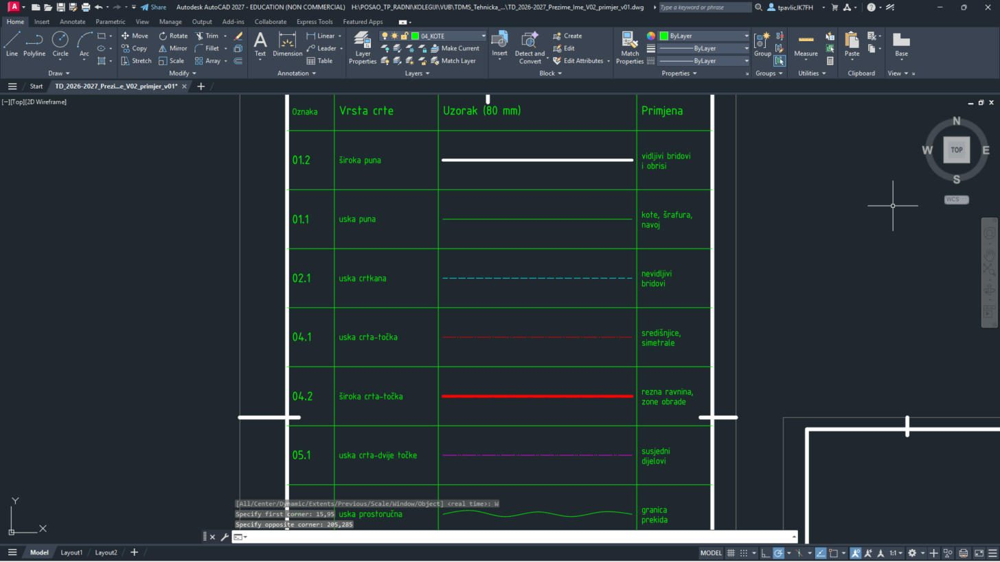
IList 1 – zaglavlje
ZOOM Enter W Enter 15,5 Enter 205,60 Enter), upiši TEXTEDIT Enter i promijeni ove tekstove (klik na tekst → upiši novi → Enter). Na kraju Esc.| Polje | Sada piše | Upiši |
|---|---|---|
| Materijal | EN AW-6082 | – |
| Masa | 0,32 kg | – |
| Opće tolerancije | ISO 2768-m | – |
| Naziv | Klizač (saonice) | Vrste crta |
| ispod naziva | pozicionirna os PS-1 | ISO 128, skupina crta 0,5 |
| Broj dokumenta | PS1-01-004 | TD-V02-1 |
| List | 1/1 | 1/3 |
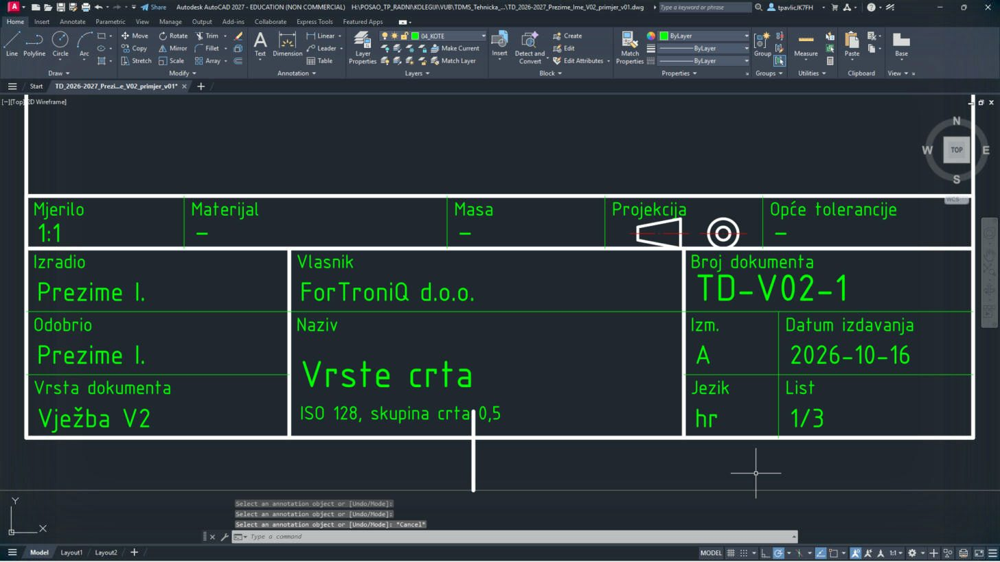
-.JList 2 – osi nosača (mjerilo 2:1)
QSAVE Enter (spremanje), pa CELTSCALE Enter 0.5 Enter.QSAVE Enter CELTSCALE Enter 0.5 EnterZOOM Enter, W Enter, 240,35 Enter, 330,115 Enter. Odaberi sloj 03_OSI: gore na traci klikni strelicu ⌄ uz popis slojeva i klikni ime sloja (kao u V1). Može i ovako: upiši CLAYER Enter, ime sloja, Enter.ZOOM Enter W Enter 240,35 Enter 330,115 EnterLINE Enter → prva točka Enter → druga točka Enter → još jednom Enter (završava crtu). Kružnica: upiši CIRCLE Enter, središte Enter, polumjer Enter.| Što | Naredba | Točke / vrijednosti |
|---|---|---|
| vodoravna os provrta | LINE | 268,80 → 296,80 |
| okomita os provrta | LINE | 282,66 → 282,94 |
| diobena kružnica Ø31 (rupe M4) | CIRCLE | središte 282,80, polumjer 15.5 |
| os lijeve rupe M6 | LINE | 262,48.5 → 262,67.5 |
| os desne rupe M6 | LINE | 302,48.5 → 302,67.5 |
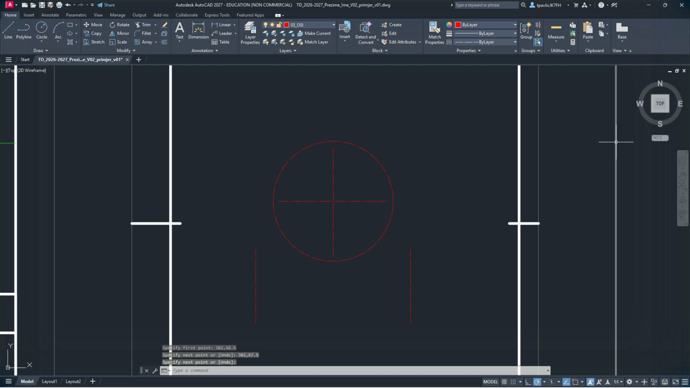
KList 2 – obris, provrt Ø22 i rupe M4
LINE Enter → prva točka Enter → druga točka Enter → još jednom Enter (završava crtu).| # | Prva točka | Druga točka |
|---|---|---|
| 1 | 289.76,90.96 | 296.16,90.96 |
| 2 | 292.96,87.76 | 292.96,94.16 |
| 3 | 267.84,90.96 | 274.24,90.96 |
| 4 | 271.04,87.76 | 271.04,94.16 |
| 5 | 267.84,69.04 | 274.24,69.04 |
| 6 | 271.04,65.84 | 271.04,72.24 |
| 7 | 289.76,69.04 | 296.16,69.04 |
| 8 | 292.96,65.84 | 292.96,72.24 |
PLINE Enter, pa 252,50, 312,50, 312,105, 252,105, C (nakon svakog Enter).PLINE Enter 252,50 Enter 312,50 Enter 312,105 Enter 252,105 Enter C EnterCIRCLE Enter, 282,80 Enter, 11 Enter (polumjer je pola promjera).CIRCLE Enter 282,80 Enter 11 Enter1.65) – četiri kružnice, svaka: CIRCLE Enter, središte Enter, 1.65 Enter.| # | Središte | Polumjer |
|---|---|---|
| 1 | 292.96,90.96 | 1.65 |
| 2 | 271.04,90.96 | 1.65 |
| 3 | 271.04,69.04 | 1.65 |
| 4 | 292.96,69.04 | 1.65 |
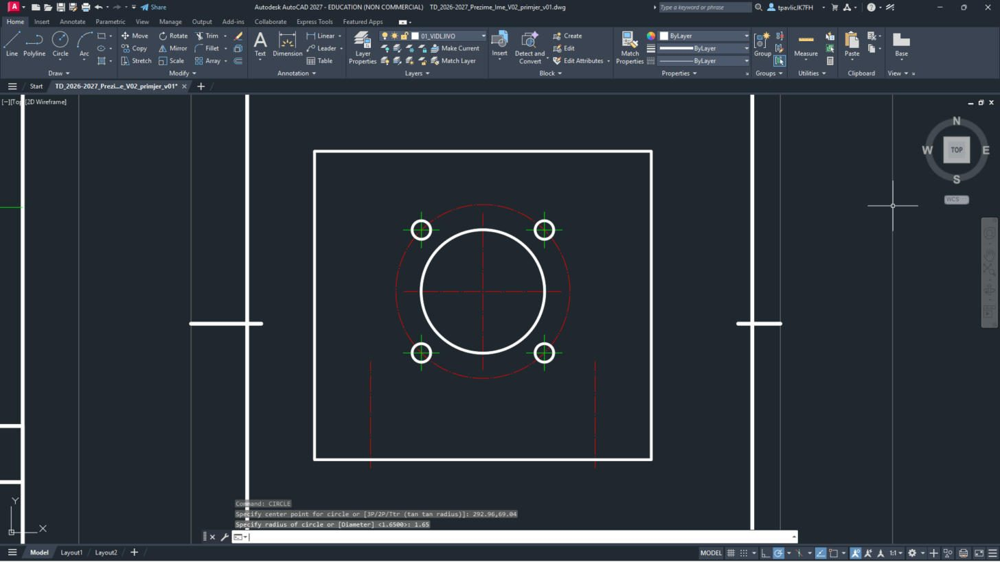
LList 2 – navoj M4 (tri četvrtine kružnice)
ARC Enter, C Enter (C = Center), središte Enter, početna točka Enter, krajnja točka Enter.| # | Središte | Početna točka | Krajnja točka |
|---|---|---|---|
| 1 | 292.96,90.96 | 292.61,92.93 | 294.93,91.31 |
| 2 | 271.04,90.96 | 270.69,92.93 | 273.01,91.31 |
| 3 | 271.04,69.04 | 270.69,71.01 | 273.01,69.39 |
| 4 | 292.96,69.04 | 292.61,71.01 | 294.93,69.39 |
ZOOM Enter, W Enter, 284,86 Enter, 302,96 Enter.ZOOM Enter W Enter 284,86 Enter 302,96 Enter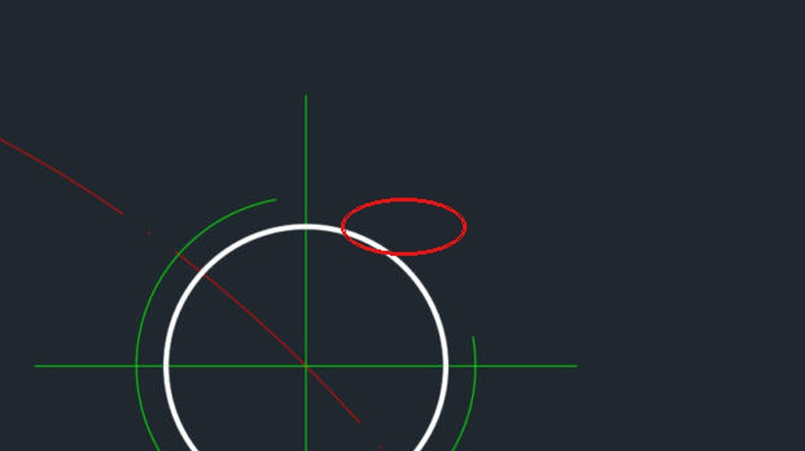
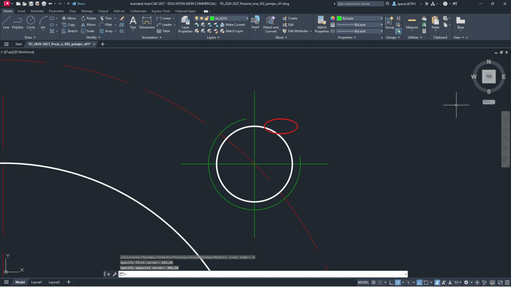
ZOOM Enter W Enter 240,35 Enter 330,115 Enter.MList 2 – rupe M6 odozdo (nevidljivi bridovi)
| Naredba | Točke | Što je to |
|---|---|---|
LINE | 259.5,50 → 259.5,65 | jezgra, lijevi brid |
LINE | 264.5,50 → 264.5,65 | jezgra, desni brid |
PLINE | 259.5,65 → 262,66.44 → 264.5,65, pa Enter | vrh svrdla 120° |
LINE | 259,50 → 259,62 | navoj, lijevo |
LINE | 265,50 → 265,62 | navoj, desno |
LINE | 259,62 → 265,62 | kraj navoja (dubina 12) |
| Naredba | Točke | Što je to |
|---|---|---|
LINE | 299.5,50 → 299.5,65 | jezgra, lijevi brid |
LINE | 304.5,50 → 304.5,65 | jezgra, desni brid |
PLINE | 299.5,65 → 302,66.44 → 304.5,65, pa Enter | vrh svrdla 120° |
LINE | 299,50 → 299,62 | navoj, lijevo |
LINE | 305,50 → 305,62 | navoj, desno |
LINE | 299,62 → 305,62 | kraj navoja (dubina 12) |
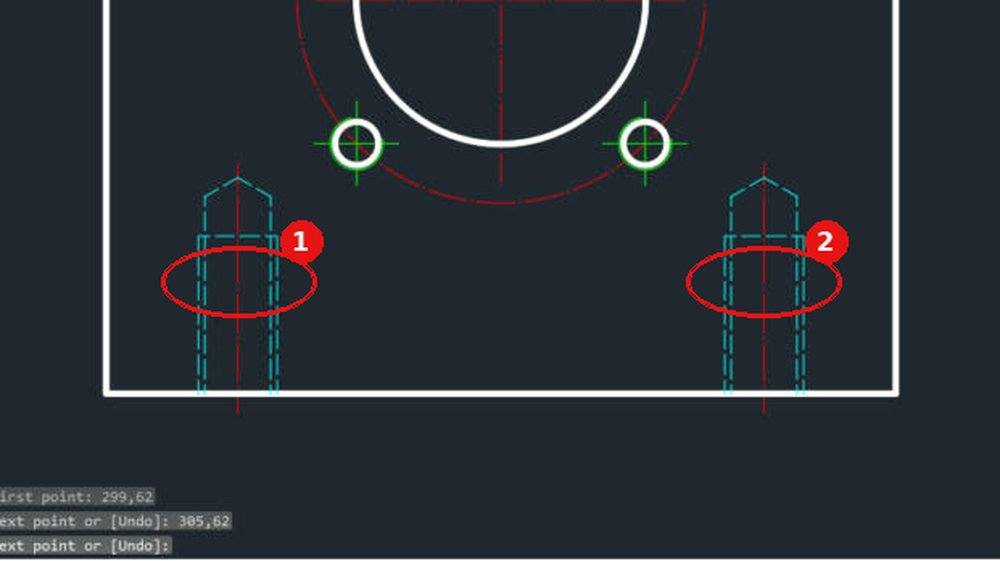
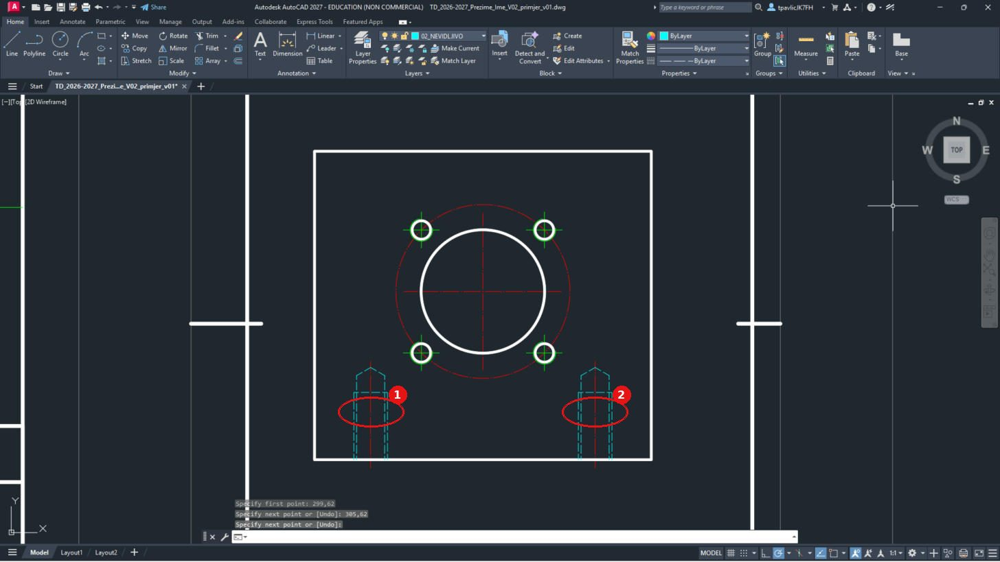
NList 2 – kote
| Upiši | Vrijednost | Što znači |
|---|---|---|
DIMTXSTY | TD_ISO | kote pišu tehničkim pismom iz V1 |
DIMTXT | 3.5 | visina brojeva 3,5 mm (na papiru) |
DIMASZ | 3 | veličina strelica 3 mm (na papiru) |
DIMSCALE | 0.5 | sve upola manje na crtežu, jer se list ispisuje 2:1 |
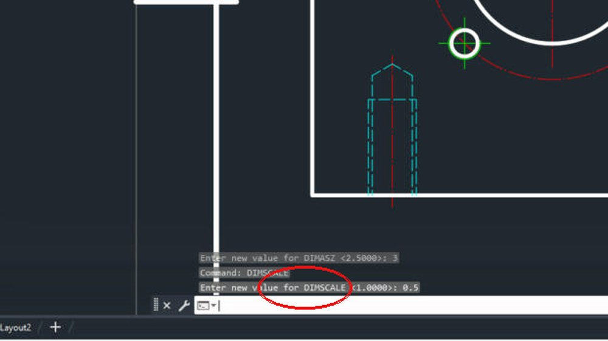
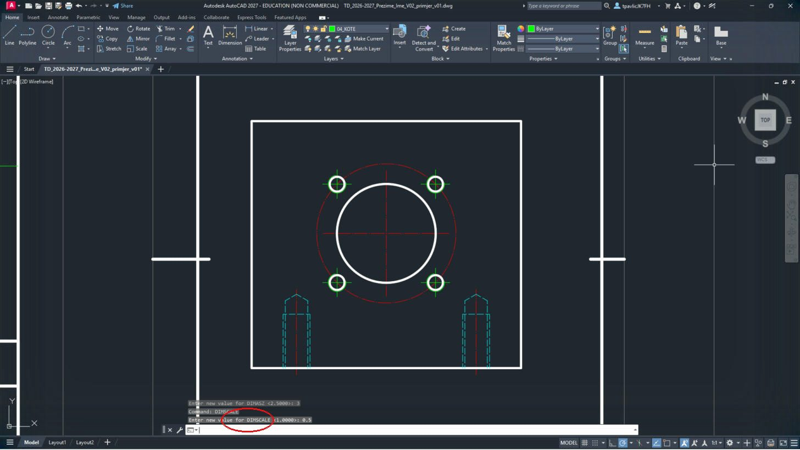
DIMLINEAR Enter, prva točka 252,50 Enter, druga točka 312,50 Enter.DIMLINEAR Enter 252,50 Enter 312,50 Enter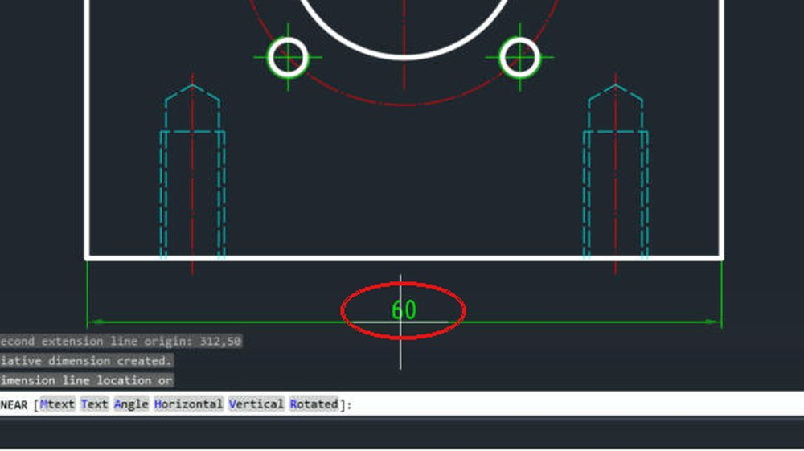
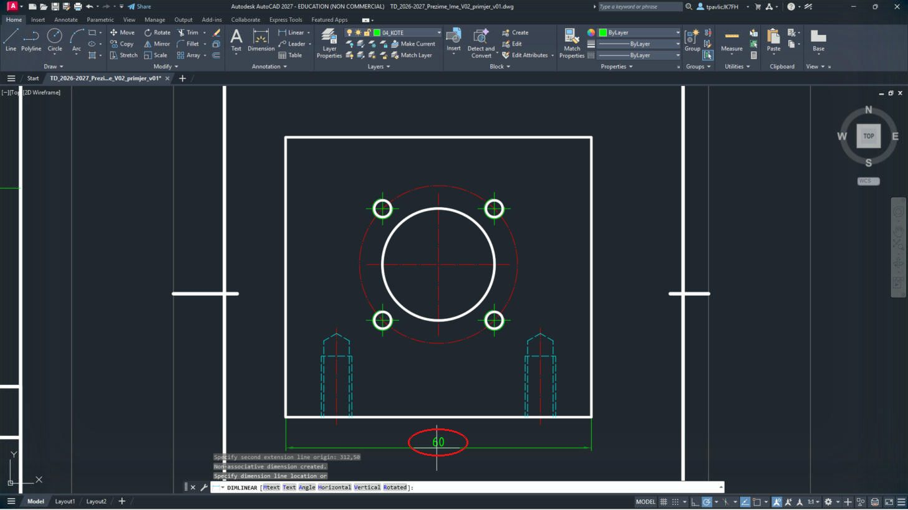
282,42 Enter. Na isti način (DIMLINEAR → prva točka → druga točka → mjesto kotne crte) dodaj još tri kote:282,42 Enter| Kota | Prva točka | Druga točka | Mjesto kotne crte |
|---|---|---|---|
| 40 (razmak rupa M6) | 262,48.5 | 302,48.5 | 282,46 |
| 55 (visina) | 252,50 | 252,105 | 244,77.5 |
| 30 (visina osi provrta) | 252,50 | 268,80 | 248,65 |
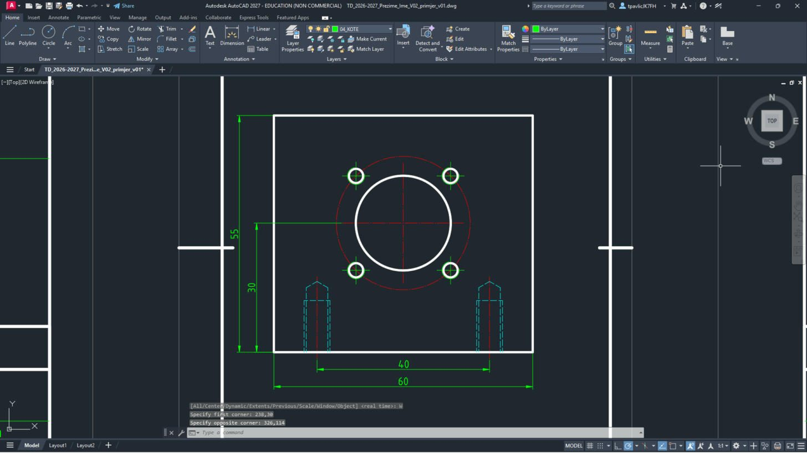
OList 2 – oznake provrta i navoja
LEADER. Upiši LEADER Enter, početak strelice (na provrtu) 280.09,90.83 Enter, kraj crte 274,109 Enter, pa još jednom Enter.LEADER Enter 280.09,90.83 Enter 274,109 Enter (Enter)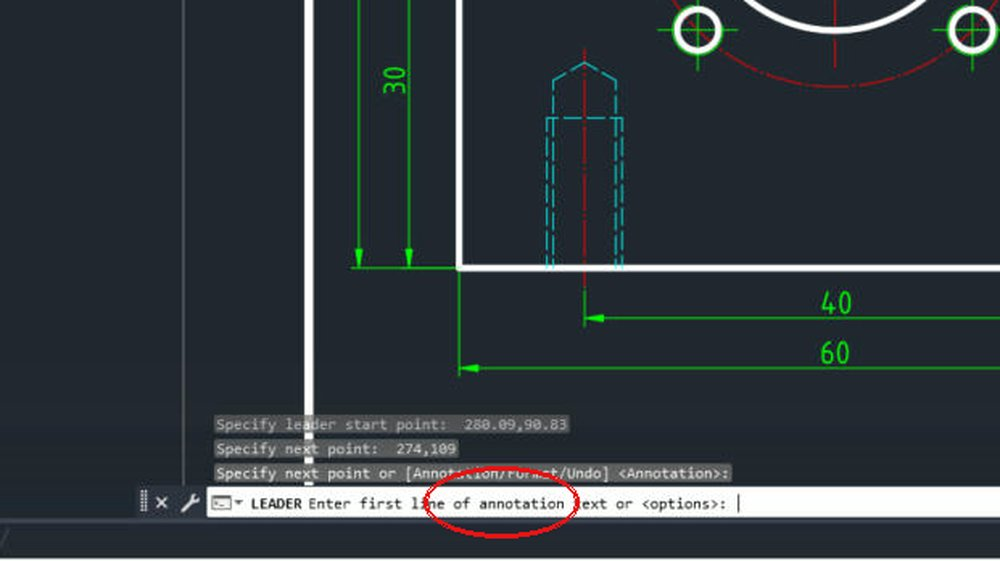
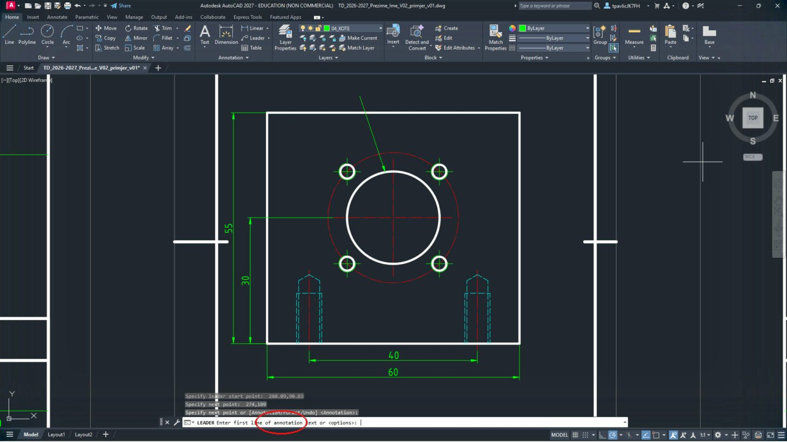
%%c22 H7 Enter, pa još jednom Enter (kraj teksta). %%c postaje znak promjera Ø.%%c22 H7 Enter (Enter)\U+00D7 (AutoCAD ga sam pretvori):| Oznaka | Početak strelice | Kraj crte | Tekst (redak po redak, svaki Enter, na kraju još Enter) |
|---|---|---|---|
| rupe M4 | 294.37,92.37 | 298,109 | 4 \U+00D7 M4 na %%c31 |
| rupe M6 | 305,58 | 314,64 | 2 \U+00D7 M6 pa dubina 12 |
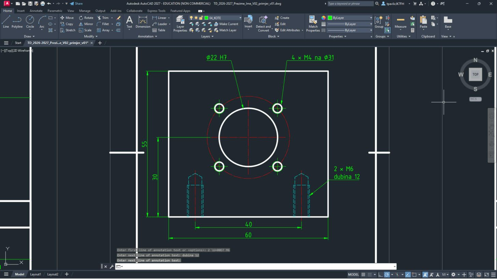
PList 2 – zaglavlje
ZOOM Enter, W Enter, 237.5,2.5 Enter, 332.5,30 Enter. Upiši TEXTEDIT Enter i promijeni (materijal EN AW-6082 i tolerancije ISO 2768-m ostaju):| Polje | Sada piše | Upiši |
|---|---|---|
| Mjerilo | 1:1 | 2:1 |
| Masa | 0,32 kg | – |
| Naziv | Klizač (saonice) | Nosač vretena |
| ispod naziva | pozicionirna os PS-1 | slobodni kraj, os PS-1 |
| Broj dokumenta | PS1-01-004 | PS1-01-003 |
| List | 1/1 | 2/3 |
ZOOM Enter, W Enter, 228,-2 Enter, 337,151 Enter.ZOOM Enter W Enter 228,-2 Enter 337,151 Enter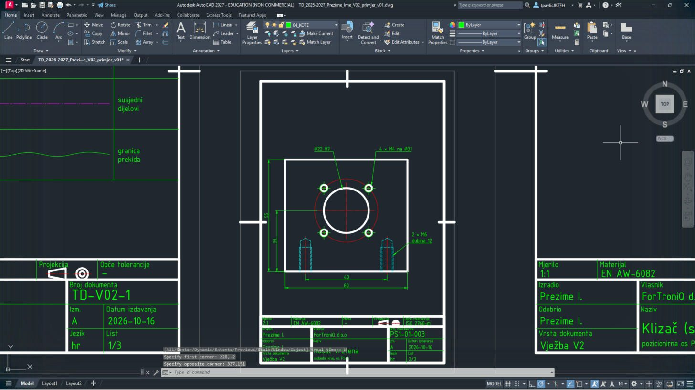
RList 3 – graničnik: nacrt i tlocrt
QSAVE Enter i vrati CELTSCALE Enter 1 Enter.QSAVE Enter CELTSCALE Enter 1 EnterZOOM Enter W Enter 390,110 Enter 545,230 Enter. Odaberi sloj 01_VIDLJIVO: gore na traci klikni strelicu ⌄ uz popis slojeva i klikni ime sloja (kao u V1). Može i ovako: upiši CLAYER Enter, ime sloja, Enter. Nacrt (obris sa stepenicom i skošenjem): PLINE Enter i točke (nakon svake Enter):ZOOM Enter W Enter 390,110 Enter 545,230 Enter PLINE Enter 407.5,179 Enter 467.5,179 Enter 467.5,194 Enter 427.5,194 Enter 427.5,213 Enter 421.5,219 Enter 407.5,219 Enter C Enter| Što | Naredba | Točke / vrijednosti |
|---|---|---|
| obris tlocrta 60 × 30 | PLINE | 407.5,124, 467.5,124, 467.5,154, 407.5,154, C |
| skošenje (početak) | LINE | 421.5,124 → 421.5,154 |
| stepenica / skošenje (kraj) | LINE | 427.5,124 → 427.5,154 |
| provrt Ø10 (okomiti) | CIRCLE | središte 449.5,139, polumjer 5 |
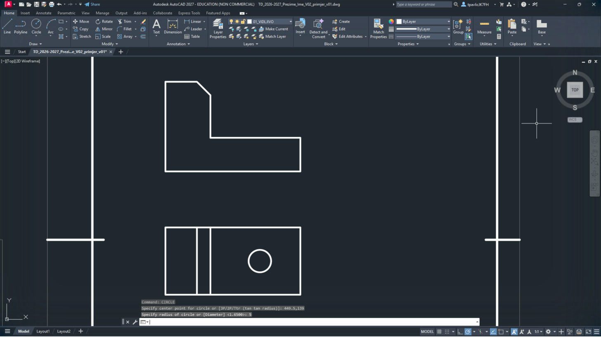
SList 3 – pomoćne crte pod 45° i bokocrt
CLAYER Enter, ime sloja, Enter. (taj se sloj ne ispisuje).| Što | Naredba | Točke (svaka Enter, na kraju još Enter) |
|---|---|---|
| crta pod 45° | LINE | 497.5,154 → 527.5,124 |
| prijenos dubine 0 | PLINE | 469.5,124 → 527.5,124 → 527.5,177 |
| prijenos dubine 10 | PLINE | 469.5,134 → 517.5,134 → 517.5,177 |
| prijenos dubine 20 | PLINE | 469.5,144 → 507.5,144 → 507.5,177 |
| prijenos dubine 30 | PLINE | 469.5,154 → 497.5,154 → 497.5,177 |
PLINE Enter 497.5,179, 527.5,179, 527.5,219, 497.5,219, C; zatim provrt Ø8: CIRCLE Enter 512.5,205 Enter 4 Enter.PLINE Enter 497.5,179 Enter 527.5,179 Enter 527.5,219 Enter 497.5,219 Enter C Enter CIRCLE Enter 512.5,205 Enter 4 Enter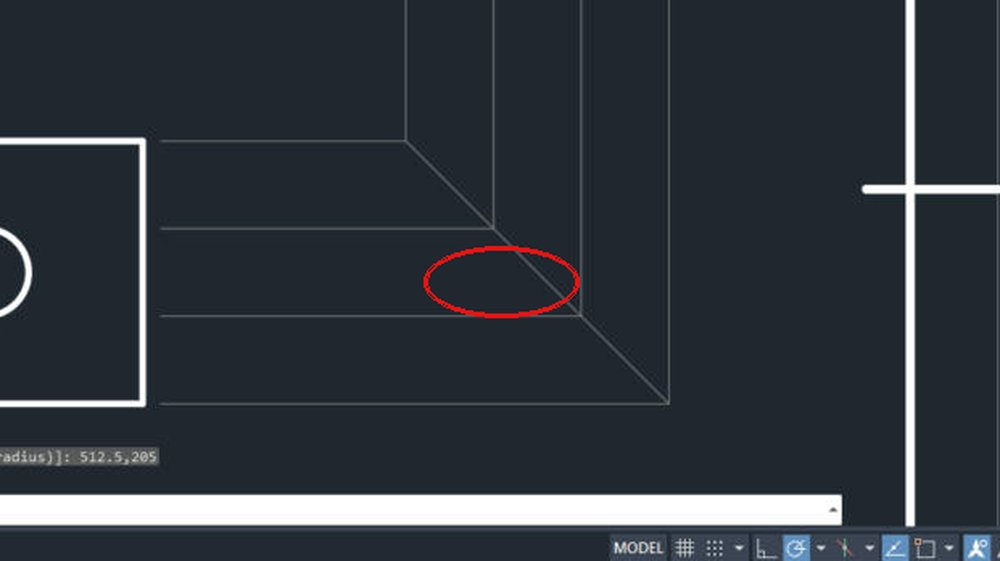
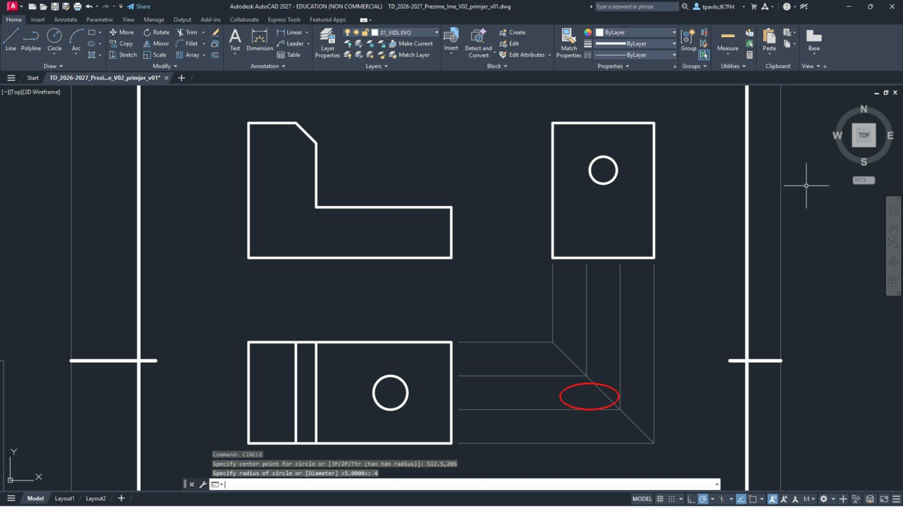
TList 3 – nevidljivi bridovi i osi
LINE Enter → prva točka Enter → druga točka Enter → još jednom Enter (završava crtu).| # | Prva točka | Druga točka | Što je to |
|---|---|---|---|
| 1 | 444.5,179 | 444.5,194 | provrt Ø10 u nacrtu – lijevo |
| 2 | 454.5,179 | 454.5,194 | provrt Ø10 u nacrtu – desno |
| 3 | 407.5,201 | 427.5,201 | provrt Ø8 u nacrtu – dolje |
| 4 | 407.5,209 | 427.5,209 | provrt Ø8 u nacrtu – gore |
| 5 | 407.5,135 | 427.5,135 | provrt Ø8 u tlocrtu – dolje |
| 6 | 407.5,143 | 427.5,143 | provrt Ø8 u tlocrtu – gore |
| 7 | 497.5,194 | 527.5,194 | stepenica u bokocrtu (visina 15) |
| 8 | 497.5,213 | 527.5,213 | skošenje u bokocrtu (visina 34) |
| 9 | 507.5,179 | 507.5,194 | provrt Ø10 u bokocrtu – lijevo |
| 10 | 517.5,179 | 517.5,194 | provrt Ø10 u bokocrtu – desno |
| # | Prva točka | Druga točka | Što je to |
|---|---|---|---|
| 1 | 449.5,176.5 | 449.5,196.5 | os Ø10 u nacrtu |
| 2 | 405,205 | 430,205 | os Ø8 u nacrtu |
| 3 | 405,139 | 430,139 | os Ø8 u tlocrtu |
| 4 | 442,139 | 457,139 | os Ø10 u tlocrtu – vodoravna |
| 5 | 449.5,131.5 | 449.5,146.5 | os Ø10 u tlocrtu – okomita |
| 6 | 512.5,176.5 | 512.5,196.5 | os Ø10 u bokocrtu |
| 7 | 506,205 | 519,205 | os Ø8 u bokocrtu – vodoravna |
| 8 | 512.5,198.5 | 512.5,211.5 | os Ø8 u bokocrtu – okomita |
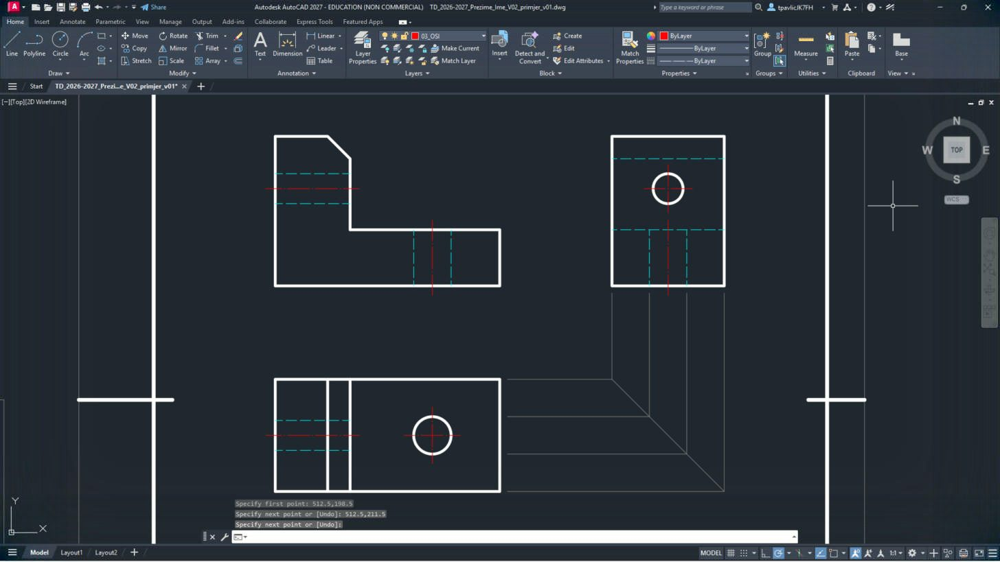
UList 3 – zaglavlje
ZOOM Enter, W Enter, 370,5 Enter, 560,60 Enter. Upiši TEXTEDIT Enter i promijeni (mjerilo 1:1, podnaslov i tolerancije ostaju):| Polje | Sada piše | Upiši |
|---|---|---|
| Materijal | EN AW-6082 | S235 |
| Masa | 0,32 kg | 0,31 kg |
| Naziv | Klizač (saonice) | Graničnik klizača |
| Broj dokumenta | PS1-01-004 | TD-V02-3 |
| List | 1/1 | 3/3 |
QSAVE Enter i pogledaj list 3: ZOOM Enter W Enter 350,-3 Enter 570,300 Enter.QSAVE Enter ZOOM Enter W Enter 350,-3 Enter 570,300 Enter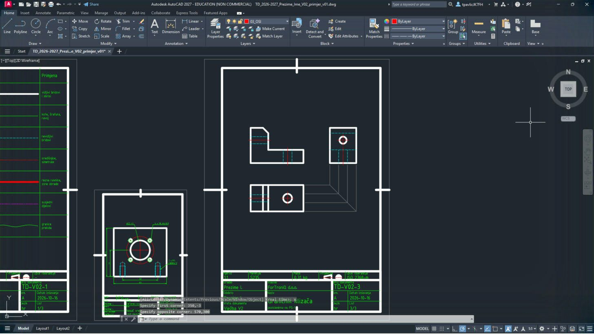
VIspis tri PDF-a
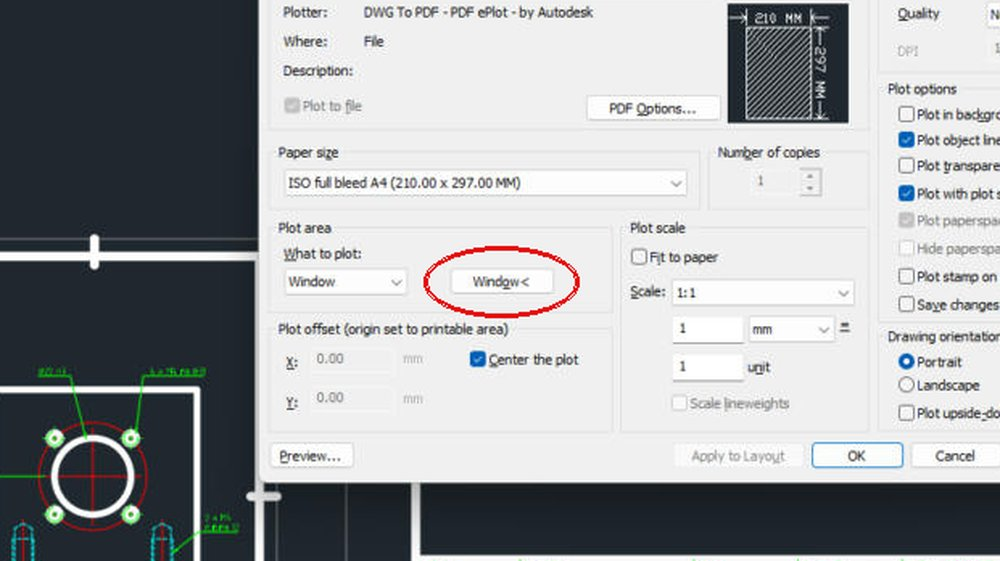

0,0 Enter, 210,297 Enter. Provjeri da je Scale 1:1 i klikni Preview….0,0 Enter 210,297 Enter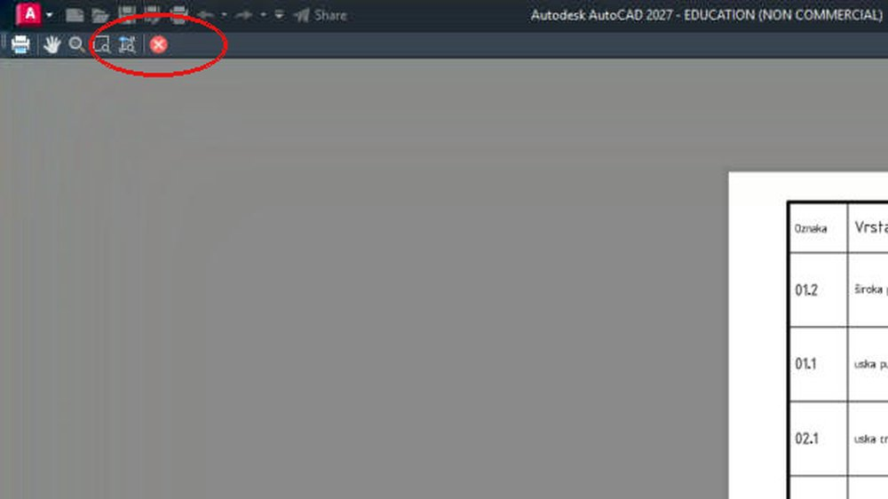
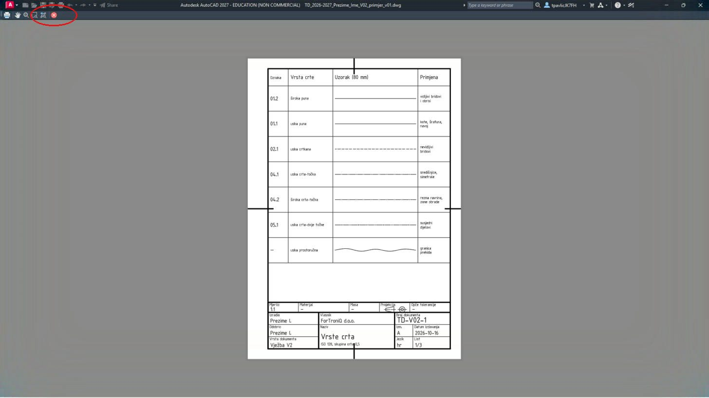
TD_2026-2027_Prezime_Ime_V02_L1 i klikni Save.

230,0 Enter → 335,148.5 Enter. Zatim klikni popis Scale (piše 1:1) i odaberi 2:1.230,0 Enter 335,148.5 Enter
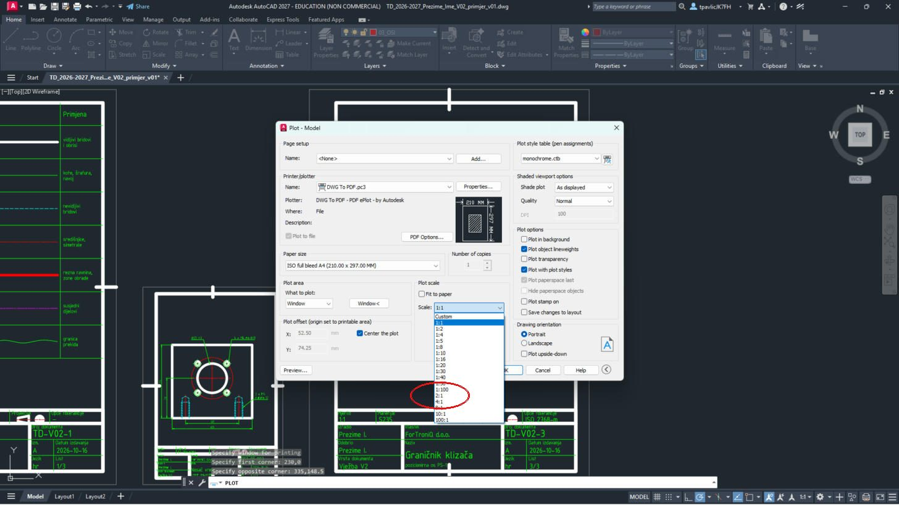
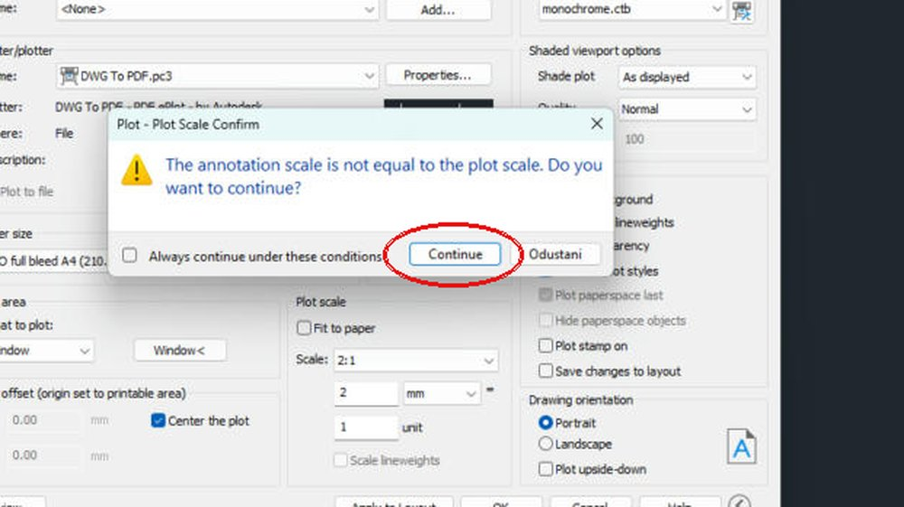

TD_2026-2027_Prezime_Ime_V02_L2.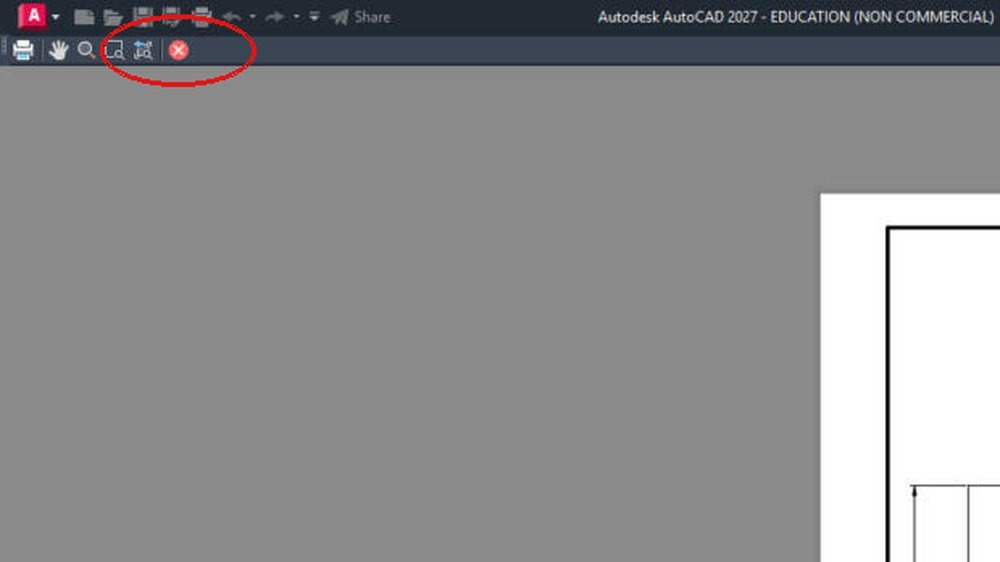
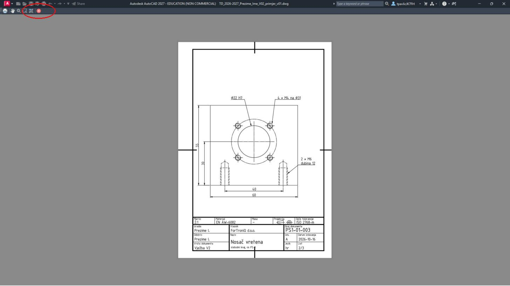
355,0 Enter → 565,297 Enter → Scale 1:1 (vrati!) → OK → spremi kao TD_2026-2027_Prezime_Ime_V02_L3.355,0 Enter 565,297 Enter| List | Window – prvi kut | Window – drugi kut | Scale | Ime PDF-a |
|---|---|---|---|---|
| 1 – vrste crta | 0,0 | 210,297 | 1:1 | …_V02_L1 |
| 2 – nosač | 230,0 | 335,148.5 | 2:1 | …_V02_L2 |
| 3 – graničnik | 355,0 | 565,297 | 1:1 | …_V02_L3 |
ZSpremi, vrati postavke i predaj
DYNMODE → 3, OSMODE → 4133, GRIDMODE → 1 (svaki put naredba Enter, vrijednost Enter). Zatim ZOOM Enter E Enter i spremi: QSAVE Enter.DYNMODE Enter 3 Enter OSMODE Enter 4133 Enter GRIDMODE Enter 1 Enter ZOOM Enter E Enter QSAVE Enter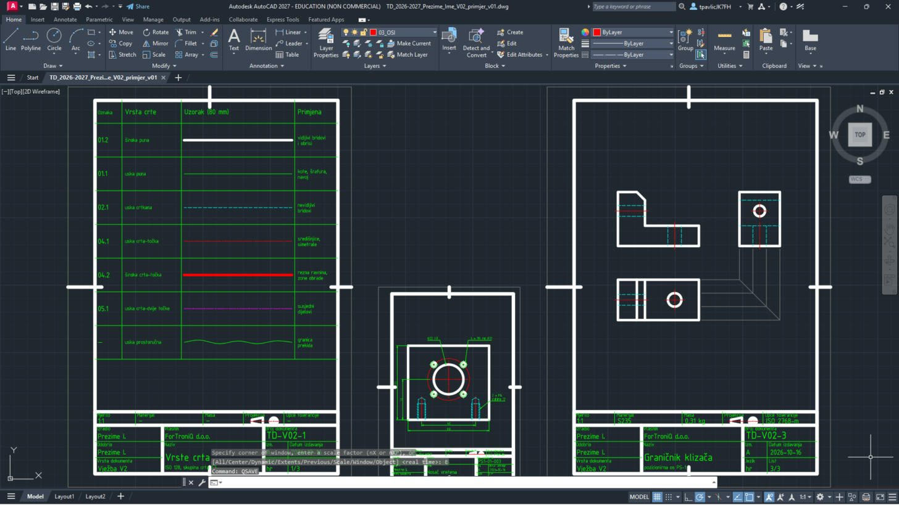
TD_2026-2027_Prezime_Ime_V02.dwg i tri PDF-a (…_V02_L1.pdf, …_V02_L2.pdf, …_V02_L3.pdf), uz ispunjen radni list.